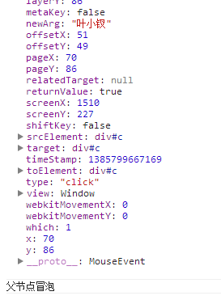

前言
最近好好的研究了一番移动设备的点击响应速度，期间不断的被自己坑，最后搞得焦头烂额，就是现在可能还有一些问题，但是过程中感觉自己成长不少，
最后居然感觉对javascript事件机制有了更好的认识，回头来看，还是不错的，所以今天将近期的学习记录下来供后期查询
今天我们再来重新回顾下javascript的事件机制
注意：下面说的android浏览器，意思是android下多数浏览器，不包括chrome
事件基础
javascript与html之间的交互式通过事件实现的，事件是文档（窗口）中发生的一些特定交互，这些交互可以使用监听器（处理程序）预定，事件发生时就会回调我们的函数
PS：这就是传说中的观察者模式，我们这里先不管他
因为我们需要确定页面哪一部分会拥有特定事件，比如内部一个span外部一个div，我们点击span时候事实上浏览器也任务div被点击了，甚至整个document也被点击了，所以引入了事件流的概念
事件流是描述从页面接收事件的顺序，现在统一有事件冒泡与事件捕获两种事件捕获流
事件冒泡/捕获
事件冒泡即由最具体的元素（文档嵌套最深节点）接收，然后逐步上传至document
事件捕获会由最先接收到事件的元素然后传向最里边（我们可以将元素想象成一个盒子装一个盒子，而不是一个积木堆积）
DOM事件流
DOM2级事件规定事件包括三个阶段：
① 事件捕获阶段
② 处于目标阶段
③ 事件冒泡阶段
所以说，我们同时为一个元素绑定事件（冒泡与捕获）先执行的是捕获，然后会执行冒泡
1 <html xmlns="http://www.w3.org/1999/xhtml"> 2 <head> 3 <title></title> 4 <style type="text/css"> 5 #p { width: 300px; height: 300px; padding: 10px; border: 1px solid black; } 6 #c { width: 100px; height: 100px; border: 1px solid red; } 7 </style> 8 </head> 9 <body> 10 <div id="p"> 11 parent 12 <div id="c"> 13 child 14 </div> 15 </div> 16 <script type="text/javascript"> 17 var p = document.getElementById('p'), 18 c = document.getElementById('c'); 19 c.addEventListener('click', function () { 20 alert('子节点捕获') 21 }, true); 22 23 c.addEventListener('click', function () { 24 alert('子节点冒泡') 25 }, false); 26 </script> 27 </body> 28 </html>
这个样子点击子元素会先执行捕获阶段注册的事件，然后执行冒泡阶段执行的事件，我们这里做一点改变
1 var p = document.getElementById('p'), 2 c = document.getElementById('c'); 3 c.addEventListener('click', function () { 4 alert('子节点捕获') 5 }, true); 6 7 c.addEventListener('click', function () { 8 alert('子节点冒泡') 9 }, false); 10 11 p.addEventListener('click', function () { 12 alert('父节点捕获') 13 }, true); 14 15 p.addEventListener('click', function () { 16 alert('父节点冒泡') 17 }, false);
① 这个时间点击父元素会先执行父元素捕获再执行父元素冒泡
② 点击子元素会执行父元素捕获，子元素捕获，子元素冒泡，父元素冒泡
至此，我们对事件流机制应该了解一些了，于是继续往下（注意：此点知识与“鬼点击”有莫大的关系）
事件对象
事件就是用户或浏览器自身执行的某种动作（click、load），响应事件的函数就是事件处理程序（监听器）
而我们的事件往往会自带一个参数——事件对象（IE那劳什子就不管了）
1 c.addEventListener('click', function (e) { 2 alert('子节点捕获') 3 }, true);
注意我们的e，他就是我们的event object了
事件对象，包含和创建他的特定事件有关的属性和方法，触发的事件不一样，参数也不一样（比如鼠标事件就会有坐标信息），我们这里题几个较重要的
PS：以下的兄弟全部是只读的，所以不要妄想去随意更改
bubbles
表明事件是否冒泡
cancelable
表明是否可以取消事件的默认行为
currentTarget
某事件处理程序当前正在处理的那个元素
defaultPrevented
为true表明已经调用了preventDefault（DOM3新增）
eventPhase
调用事件处理程序的阶段：1 捕获；2 处于阶段；3 冒泡阶段
target
事件目标（绑定事件那个dom）
trusted
true表明是系统的，false为开发人员自定义的（DOM3新增）
type
事件类型
view
与事件关联的抽象视图，发生事件的window对象
preventDefault
取消事件默认行为，cancelable是true时可以使用
stopPropagation
取消事件捕获/冒泡，bubbles为true才能使用
stopImmediatePropagation
取消事件进一步冒泡，并且组织任何事件处理程序被调用（DOM3新增）
在我们的事件处理内部，this与currentTarget相同
思考事件参数
这里有一个比较有意思的问题，说他有意思，是因为我觉得可能各位平时没有思考过：
我们一次点击事件，各个事件处理的Event Object是否相同？
答案是肯定的，这里我们用IE的事件对象来说，我们是这样获得的window.event，IE这样干不是没有道理的，因为我们一次点击这个家伙是共用的！！！
事实上，我们每次鼠标操作，这个事件参数都是相同的，不信？？
以PC来说，我们为movedown绑定一个事件，并且动态为e增加一个属性，newArg
1 window.log = function (msg) { 2 console.log(msg) 3 } 4 5 var p = document.getElementById('p'), 6 c = document.getElementById('c'); 7 8 document.addEventListener('click', function (e) { 9 e.newArg = '叶小钗'; 10 }, true); 11 12 c.addEventListener('click', function (e) { 13 log(e); 14 log('子节点捕获') 15 }, true); 16 17 c.addEventListener('click', function (e) { 18 log(e); 19 log('子节点冒泡') 20 }, false); 21 22 p.addEventListener('click', function (e) { 23 log(e); 24 log('父节点捕获') 25 }, true); 26 27 p.addEventListener('click', function (e) { 28 log(e); 29 log('父节点冒泡') 30 }, false);

在最后的事件冒泡阶段，我们可以看到，我们是多了一个newArg属性的，由此我们可以证明我们整个过程中event是一样的
模拟事件
事件，就是网页中某个值得关注的瞬间，事件经常由用户操作或浏览器功能触发，其实我们可以使用javascript在任意时刻来触发特定事件
而，此时的事件就和浏览器创建的事件一样，也就是说我们的事件会冒泡会导致浏览器默认行为触发，模拟事件是出现鬼点击主要原因
createEvent
可以在document对象上使用createEvent创建一个event对象
DOM3新增以下事件：
UIEvents
MouseEvents
MutationEvents，一般化dom变动
HTMLEvents一般dom事件
模拟鼠标事件
创建鼠标事件时需要创建的事件对象需要提供指定的信息（鼠标位置信息），我们这里提供以下参数：
var type = 'click'; //要触发的事件类型 var bubbles = true; //事件是否可以冒泡 var cancelable = true; //事件是否可以阻止浏览器默认事件 var view = document.defaultView; //与事件关联的视图，该属性默认即可，不管 var detail = 0; var screenX = 0; var screenY = 0; var clientX = 0; var clientY = 0; var ctrlKey = false; //是否按下ctrl var altKey = false; //是否按下alt var shiftKey = false; var metaKey = false; var button = 0;//表示按下哪一个鼠标键 var relatedTarget = 0; //模拟mousemove或者out时候用到，与事件相关的对象 var event = document.createEvent('MouseEvents'); event.initMouseEvent(type, bubbles, cancelable, view, detail, screenX, screenY, clientX, clientY, ctrlKey, altKey, shiftKey, metaKey, button, relatedTarget);
如此我们就可以用到这个东西了，好了，我们后面会用到他的，至此，我们基础复习完毕，进入今天的正题吧
“鬼点击”何来
我们一般的移动设备在浏览网页时候都会有这样的功能：连续点击两次页面，整个页面会放大！
这是我们click事件在移动端会延迟300ms的主要原因
但是，我们真正开发移动站点时候，会限制我们的viewport，所以双击放大的效果便没有意义，这个效果反而让我们整个网页看起来“迟钝”
而我们的touch事件并不会有任何延迟，所以他就成了我们解决click响应速度的利刃，而且我也暂时只知道他能干（chrome30更新后，解决了这个问题）
所以javascript提出了几个解决方案， 第一个方案当然是我们的tap事件
tap事件
tap事件的由来是系统自建了一个事件，叫做tap事件，他在touchend时候会触发
PS：复杂的判断逻辑我们这里就不写了


1 <!DOCTYPE html PUBLIC "-//W3C//DTD XHTML 1.0 Transitional//EN" "http://www.w3.org/TR/xhtml1/DTD/xhtml1-transitional.dtd"> 2 <html xmlns="http://www.w3.org/1999/xhtml"> 3 <head> 4 <title></title> 5 <meta name="viewport" content="width=device-width,initial-scale=1.0, minimum-scale=1.0, maximum-scale=1.0, user-scalable=no"> 6 <style type="text/css"> 7 #p { width: 300px; height: 300px; padding: 10px; border: 1px solid black; } 8 #c { width: 100px; height: 100px; border: 1px solid red; } 9 </style> 10 </head> 11 <body> 12 <input id="tap" type="button" value="我是tap" /><br /> 13 <input id="click" type="button" value="我是click" /> 14 <script type="text/javascript"> 15 var tap = document.getElementById('tap'); 16 var click = document.getElementById('click'); 17 var t = 0, el; 18 19 document.addEventListener('touchstart', function (e) { 20 t = e.timeStamp; 21 el = e.target; 22 }); 23 document.addEventListener('touchend', function (e) { 24 t = e.timeStamp; 25 var type = 'tap'; //要触发的事件类型 26 var bubbles = true; //事件是否可以冒泡 27 var cancelable = true; //事件是否可以阻止浏览器默认事件 28 var view = document.defaultView; //与事件关联的视图，该属性默认即可，不管 29 var detail = 0; 30 var screenX = 0; 31 var screenY = 0; 32 var clientX = 0; 33 var clientY = 0; 34 var ctrlKey = false; //是否按下ctrl 35 var altKey = false; //是否按下alt 36 var shiftKey = false; 37 var metaKey = false; 38 var button = 0; //表示按下哪一个鼠标键 39 var relatedTarget = 0; //模拟mousemove或者out时候用到，与事件相关的对象 40 var event = document.createEvent('MouseEvents'); 41 event.initMouseEvent(type, bubbles, cancelable, view, detail, screenX, screenY, clientX, clientY, ctrlKey, altKey, shiftKey, metaKey, button, relatedTarget); 42 //触发tap事件 43 el.dispatchEvent(event); 44 }); 45 function fnDom(el, msg, e) { 46 el.value = msg + '(' + (e.timeStamp - t) + ')'; 47 } 48 tap.addEventListener('tap', function (e) { 49 fnDom(this, '我是tap，我响应时间：', e); 50 }); 51 click.addEventListener('click', function (e) { 52 fnDom(this, '我是click，我响应时间：', e); 53 }); 54 </script> 55 </body> 56 </html>
这里的响应时间计算可能有点夸张，但是各位用手机浏览器打开点击后应该会有感觉：
{kind=link}
测试过的朋友会发现明显的顺畅感和堵塞感，然后我们来看看如何改写本身事件：
鬼点击之因
我们的项目可能已经做过一半了，也许我们的项目已经完成，所以，我们并不想将click事件一个个换成tap，谁知道tap会出什么劳什子问题！
PS：事实上tap确实搞了不少事情出来
所以，我们想到了改写click事件触发点，直接全站提升click的响应速度，于是我们将上面的代码这样一改
1 <!DOCTYPE html PUBLIC "-//W3C//DTD XHTML 1.0 Transitional//EN" "http://www.w3.org/TR/xhtml1/DTD/xhtml1-transitional.dtd"> 2 <html xmlns="http://www.w3.org/1999/xhtml"> 3 <head> 4 <title></title> 5 <meta name="viewport" content="width=device-width,initial-scale=1.0, minimum-scale=1.0, maximum-scale=1.0, user-scalable=no"> 6 <style type="text/css"> 7 #p { width: 300px; height: 300px; padding: 10px; border: 1px solid black; } 8 #c { width: 100px; height: 100px; border: 1px solid red; } 9 </style> 10 </head> 11 <body> 12 <input id="tap1" type="button" value="我是tap" /><br /> 13 <input id="click1" type="button" value="我是click" /> 14 15 <script type="text/javascript"> 16 var tap1 = document.getElementById('tap1'); 17 var click1 = document.getElementById('click1'); 18 var t = 0, el; 19 20 document.addEventListener('touchstart', function (e) { 21 t = e.timeStamp; 22 el = e.target; 23 }); 24 25 //注意，此处鼠标信息我没有管他 26 function createEvent(type) { 27 var bubbles = true; //事件是否可以冒泡 28 var cancelable = true; //事件是否可以阻止浏览器默认事件 29 var view = document.defaultView; //与事件关联的视图，该属性默认即可，不管 30 var detail = 0; 31 var screenX = 0; 32 var screenY = 0; 33 var clientX = 0; 34 var clientY = 0; 35 var ctrlKey = false; //是否按下ctrl 36 var altKey = false; //是否按下alt 37 var shiftKey = false; 38 var metaKey = false; 39 var button = 0; //表示按下哪一个鼠标键 40 var relatedTarget = 0; //模拟mousemove或者out时候用到，与事件相关的对象 41 var event = document.createEvent('MouseEvents'); 42 event.initMouseEvent(type, bubbles, cancelable, view, detail, screenX, screenY, clientX, clientY, ctrlKey, altKey, shiftKey, metaKey, button, relatedTarget); 43 return event; 44 } 45 document.addEventListener('touchend', function (e) { 46 t = e.timeStamp; 47 48 var event = createEvent('tap') 49 //触发tap事件 50 el.dispatchEvent(event); 51 52 //触发click 53 var cEvent = createEvent('click'); 54 el.dispatchEvent(cEvent); 55 }); 56 function fnDom(el, msg, e) { 57 el.value = msg + '(' + (e.timeStamp - t) + ')'; 58 } 59 tap1.addEventListener('tap', function (e) { 60 fnDom(this, '我是tap，我响应时间：', e); 61 }); 62 click1.addEventListener('click', function (e) { 63 fnDom(this, '我是click，我响应时间：', e); 64 }); 65 </script> 66 </body> 67 </html>
{kind=link}
这里我们点击按钮后就明显看到了按钮开始响应时间是80左右，马上变成了300多ms，因为click事件被执行了两次
一次是touchend我们手动执行，一次是系统自建的click，这就是传说中的鬼点击
初步解决鬼点击
起初，我认为解决鬼点击比较简单：直接在touchend处阻止浏览器默认事件即可：
1 document.addEventListener('touchend', function (e) { 2 t = e.timeStamp; 3 4 var event = createEvent('tap') 5 //触发tap事件 6 el.dispatchEvent(event); 7 8 //触发click 9 var cEvent = createEvent('click'); 10 el.dispatchEvent(cEvent); 11 12 e.preventDefault(); 13 14 });
按道理来说，这个代码是没有问题的（而且同时可以解决我们的点透问题），但是在android上情况有所不同
我们的click依旧执行了两次！！！！！不信，您去试试......
PS：不要问我为什么android不行，我这个事情没搞透，如果您知道，请给我留言
现在回到我们最初（昨天吧，自己做的demo）的例子：
1 <!DOCTYPE html PUBLIC "-//W3C//DTD XHTML 1.0 Transitional//EN" "http://www.w3.org/TR/xhtml1/DTD/xhtml1-transitional.dtd"> 2 <html xmlns="http://www.w3.org/1999/xhtml"> 3 <head> 4 <title></title> 5 <meta name="viewport" content="width=device-width,initial-scale=1.0, minimum-scale=1.0, maximum-scale=1.0, user-scalable=no"> 6 <style type="text/css"> 7 .bt { position: absolute; top: 250px; display: block; height: 50px; } 8 </style> 9 </head> 10 <body> 11 <input type="button" class="bt" value="我是快速点击事件" id="fastclick" /> 12 <input type="text" style="width: 150px; height: 200px;" /> 13 <div id="div" style="width: 200px; height: 200px; border: 1px solid black"> 14 </div> 15 </body> 16 <script type="text/javascript"> 17 var fastclick = document.getElementById('fastclick'); 18 var div = document.getElementById('div'); 19 var touch = {}; 20 var t = new Date().getTime(); 21 22 window.log = function (msg) { 23 var d = document.createElement('div'); 24 d.innerHTML = msg; 25 div.appendChild(d); 26 console.log(msg); 27 }; 28 29 document.addEventListener('click', function (event) { 30 if (event.myclick == true) { 31 return true; 32 } 33 if (event.stopImmediatePropagation) { 34 event.stopImmediatePropagation(); 35 } else { 36 event.propagationStopped = true; 37 } 38 event.stopPropagation(); 39 event.preventDefault(); 40 return true; 41 }, true); 42 43 document.addEventListener('touchstart', function (e) { 44 touch.startTime = e.timeStamp; 45 touch.el = e.target; 46 t = e.timeStamp; 47 }); 48 document.addEventListener('touchmove', function (e) { }); 49 document.addEventListener('touchend', function (e) { 50 touch.last = e.timeStamp; 51 var event = document.createEvent('Events'); 52 event.initEvent('click', true, true, window, 1, e.changedTouches[0].screenX, e.changedTouches[0].screenY, e.changedTouches[0].clientX, e.changedTouches[0].clientY, false, false, false, false, 0, null); 53 event.myclick = true; 54 touch.el && touch.el.dispatchEvent(event); 55 return true; 56 }); 57 58 function fnDom(el, msg, e) { 59 el.value = msg + '(' + (e.timeStamp - t) + ')'; 60 el.style.display = 'none'; 61 setTimeout(function () { 62 el.style.display = ''; 63 }, 1000) 64 } 65 66 fastclick.addEventListener('click', function (e) { 67 fnDom(this, '我是快速点击事件', e); 68 log('快速点击'); 69 }); 70 71 div.addEventListener('click', function (e) { 72 this.innerHTML += 'div<br/>' 73 }); 74 </script> 75 </html>
http://sandbox.runjs.cn/show/muk6q2br
最后追寻很久找到一个解决方案，该方案将上述知识点全部联系起来了：
① 我们程序逻辑时先触发touch事件，在touchend时候模拟click事件
② 这时我们给click事件对象一个属性：
1 var event = document.createEvent('Events'); 2 event.initEvent('click', true, true, window, 1, e.changedTouches[0].screenX, 3 e.changedTouches[0].screenY, e.changedTouches[0].clientX, e.changedTouches[0].clientY, false, false, false, false, 0, null); 4 event.myclick = true; 5 touch.el && touch.el.dispatchEvent(event);
③ 然后按照我们基础篇的逻辑，我们事实上会先执行document上的click事件
我们这里做了一个操作，判断是否包含myclick属性，有就直接跳出（事件会向下传递），如果没有就阻止传递
到此，我们就解决了鬼点击问题，当然，不够完善
点透问题
我们如果刚刚点击按钮时候让按钮消失，事实上他会触发在他下面元素的click事件！
这个就是我们所谓“点透”问题，这个点透可以通过解决鬼点击的方式解决，但是有一种点透却不是那么简单的！！！
1 <!DOCTYPE html PUBLIC "-//W3C//DTD XHTML 1.0 Transitional//EN" "http://www.w3.org/TR/xhtml1/DTD/xhtml1-transitional.dtd"> 2 <html xmlns="http://www.w3.org/1999/xhtml"> 3 <head> 4 <title></title> 5 <meta name="viewport" content="width=device-width,initial-scale=1.0, minimum-scale=1.0, maximum-scale=1.0, user-scalable=no"> 6 <style type="text/css"> 7 .bt { position: absolute; top: 50px; display: block; height: 50px; } 8 </style> 9 </head> 10 <body> 11 <input type="button" class="bt" value="我是快速点击事件" id="fastclick" /> 12 <input type="text" style="width: 150px; height: 200px;" /> 13 <div id="div" style="width: 200px; height: 200px; border: 1px solid black"> 14 </div> 15 </body> 16 <script type="text/javascript"> 17 var fastclick = document.getElementById('fastclick'); 18 var div = document.getElementById('div'); 19 var touch = {}; 20 var t = new Date().getTime(); 21 22 window.log = function (msg) { 23 var d = document.createElement('div'); 24 d.innerHTML = msg; 25 div.appendChild(d); 26 console.log(msg); 27 }; 28 29 document.addEventListener('click', function (event) { 30 if (event.myclick == true) { 31 return true; 32 } 33 if (event.stopImmediatePropagation) { 34 event.stopImmediatePropagation(); 35 } else { 36 event.propagationStopped = true; 37 } 38 event.stopPropagation(); 39 event.preventDefault(); 40 return true; 41 }, true); 42 43 document.addEventListener('touchstart', function (e) { 44 touch.startTime = e.timeStamp; 45 touch.el = e.target; 46 t = e.timeStamp; 47 }); 48 document.addEventListener('touchmove', function (e) { }); 49 document.addEventListener('touchend', function (e) { 50 touch.last = e.timeStamp; 51 var event = document.createEvent('Events'); 52 event.initEvent('click', true, true, window, 1, e.changedTouches[0].screenX, e.changedTouches[0].screenY, e.changedTouches[0].clientX, e.changedTouches[0].clientY, false, false, false, false, 0, null); 53 event.myclick = true; 54 touch.el && touch.el.dispatchEvent(event); 55 return true; 56 }); 57 58 function fnDom(el, msg, e) { 59 el.value = msg + '(' + (e.timeStamp - t) + ')'; 60 el.style.display = 'none'; 61 setTimeout(function () { 62 el.style.display = ''; 63 }, 1000) 64 } 65 66 fastclick.addEventListener('click', function (e) { 67 fnDom(this, '我是快速点击事件', e); 68 log('快速点击'); 69 }); 70 71 div.addEventListener('click', function (e) { 72 this.innerHTML += 'div<br/>' 73 }); 74 </script> 75 </html>
这种情况下，我们点击按钮，按钮消失，然后下面的input会获取焦点的！这个问题无法避免，解决方案依旧是阻止浏览器本身事件
这样在ios下面就没有问题了，当然现在我们input不能获得焦点了，但是该问题比较简单，我们暂时不管他，说下我们android下的问题
现在我们在android下，那个input非要获得焦点，这就是我们最痛恨的“点透”现象之一
该种场景比较常见：我们点击按钮出现一个弹出层，我们点击弹出层关闭按钮，正好下面有个input标签，尼玛就谈了一个键盘出来......
android问题
最后研究得出了惊人的结果，这个劳什子android里面moveover事件偶然比尼玛touchstart还快！！！
而ios压根就不理睬mouseover事件，这是主要问题产生原因！！！
而android在movedown时候，开开心心触发了input的focus事件，然后键盘就弹起来了！！！
所以针对android，我们还得将mousedown干掉才行！！！！
而事实上，我们input获取焦点，就是通过mousedown触发的，ios也是
至此，我们主要问题讨论的差不多了，暂时到这里吧。
结语
今天我们一起温故了一次javascript事件相关的知识，记录了最近我遇到的一些问题供以后查询，如果这些知识对你有用就善莫大焉了